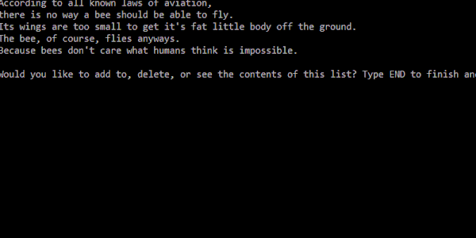
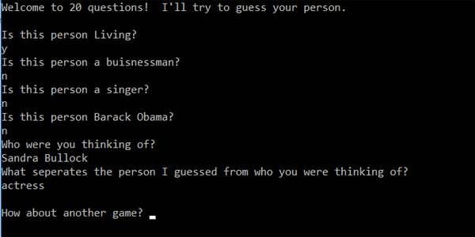
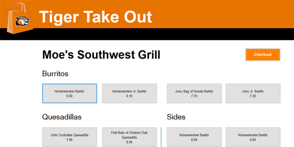

C#
click on the preview below to view full work



Script editor application using a File IO to read and write over a text file
A binary tree application that plays 20 Questions with the user,
and learns new information when it loses
Mock windows forms food delivery application
for the Rochester Institute of Technology